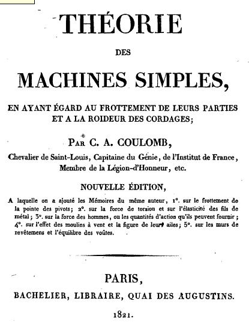
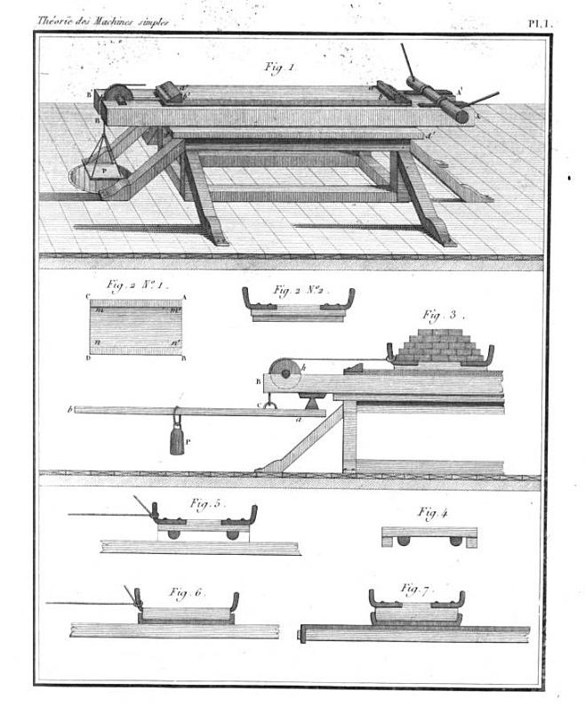

article 21, issue 08
Coulomb's Work on Human PowerTheo Schmidt
December 21, 2014Editors' note
This article commenced in early 2014 is still incomplete, but we publish a premature pre-Christmas draft as the only submission to HPeJ for this year. Besides the following observations, the article includes Coulomb's original text in French and an English machine-translation. Completing the translation is "work in progress" (help welcome!).
Introduction
Charles-Augustin de Coulomb (1736 – 1806) was a French physicist who is today well-known for his work in the field of electrostatics and geotechnical engineering. The SI unit of charge (coulomb = ampère second) and several physical laws are named after him. He was also a civil engineer and developed models for stress and friction of solids and soil.
While looking through Coulomb's major work on friction "Théorie des machines simples", I came across a 43-page section on human power, or more precisely on the work done by men mainly when elevating loads. Coulomb presented his research to the Académie des Sciences in Paris and was a awarded a grand prize in 1781. It is today available in a 368-page book published in 1821. Google Books lists no less than eight copies, mostly its own scans of various library copies in the Public Domain.
This article is will be a summary of Coulomb's findings and HPeJ also offers will offer you perhaps the first freely available translation of this section.
 
[Figure 1] Title page
[Figure 2] Plate 1 showing friction measurement
Coulomb's method
In his early professional life, Coulomb worked as a civil and military engineer in France and abroad. He was thus often confronted with teams of men and animals shifting soil and building materials. With his scientific mind he immediately began to measure and record the amount of physical work being done and compared the efficiency of different situations.
Coulomb's interest appears to have been primarly in recording the maximum amount of daily work which a man can do day after day and not in increasing the efficiency of the work. Thus he was most interested in situations where loads were transported uphill, as this the work is then easy to measure as potential energy. Coulomb included the weight of the workers themselves and also calculated round trips, so was able to calculate the efficiencies achieved with respect to the potential energy gained. In contrast, when transporting loads without elevating them, the potential energy gain is zero and the efficiency in this respect is also zero.
Results
To be completed...
References
Théorie des machines simples: Editions given by Google Books.